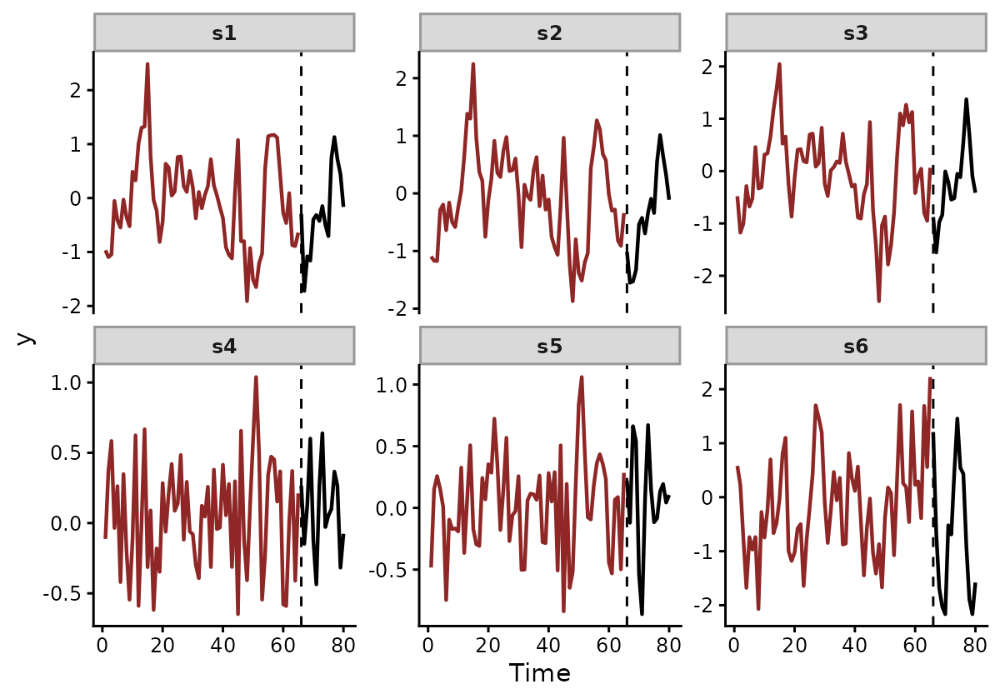
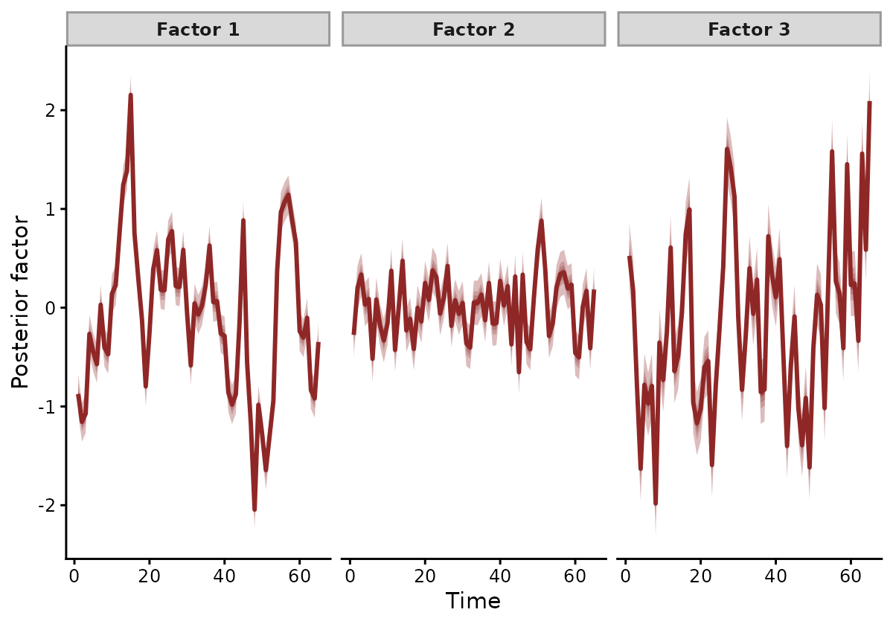
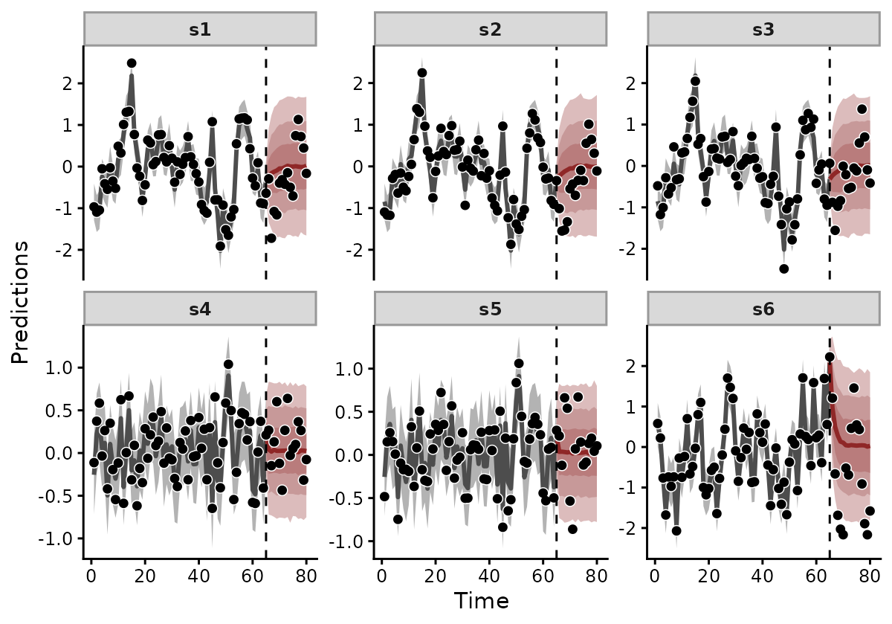
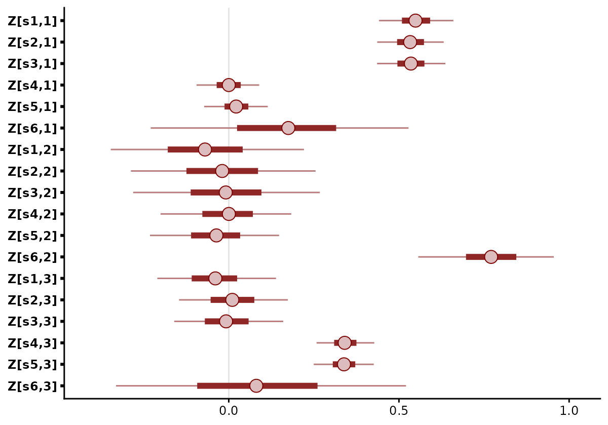
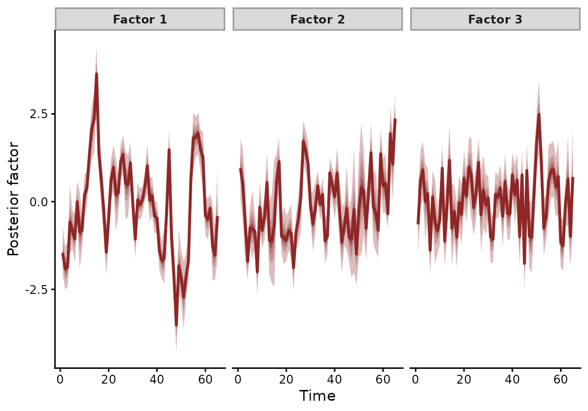
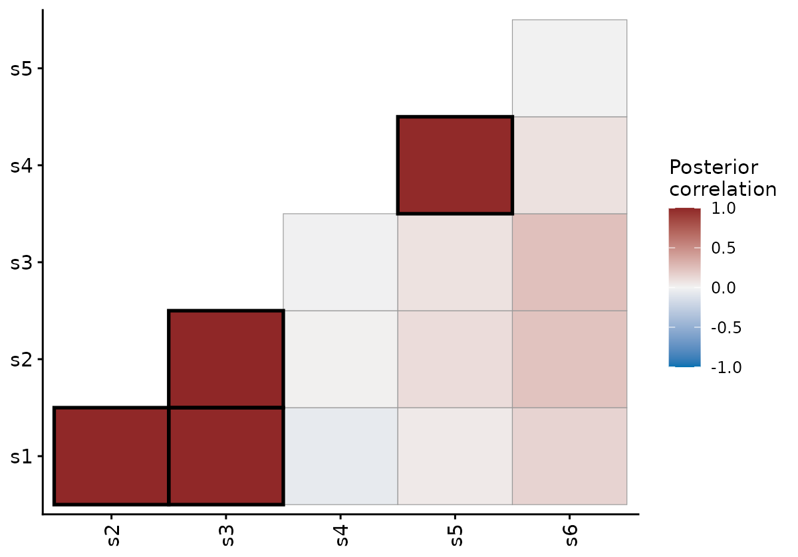
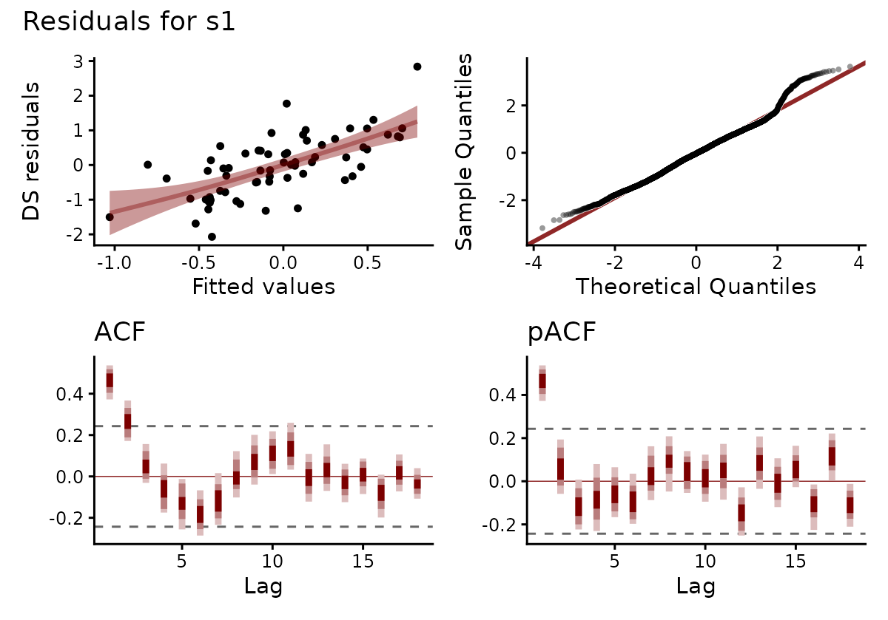
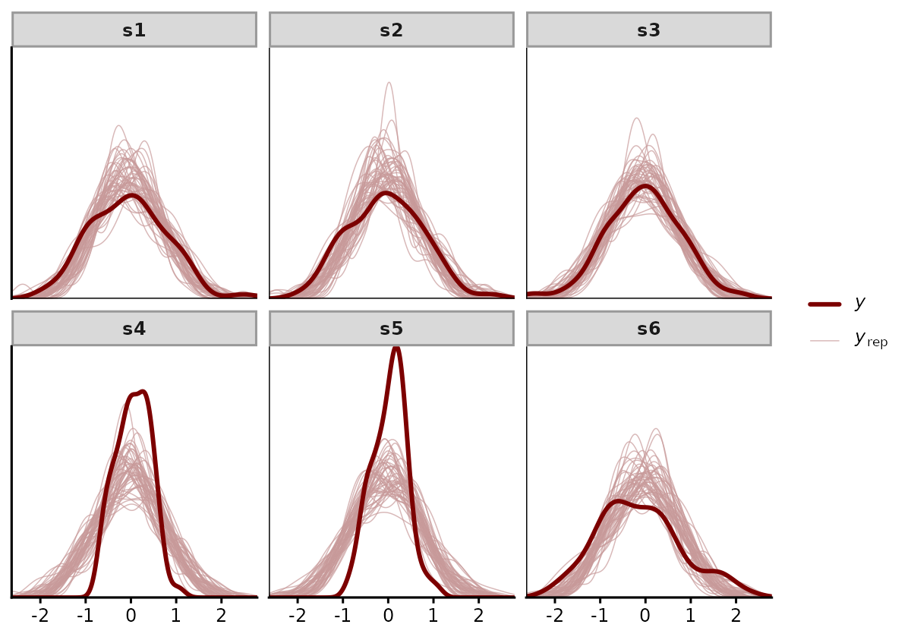
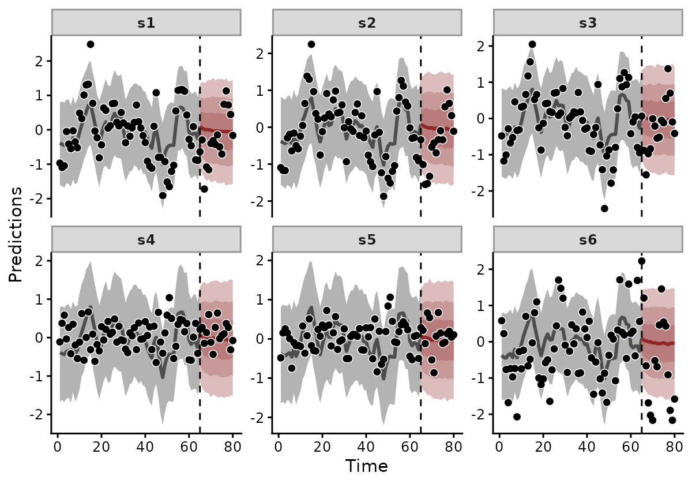
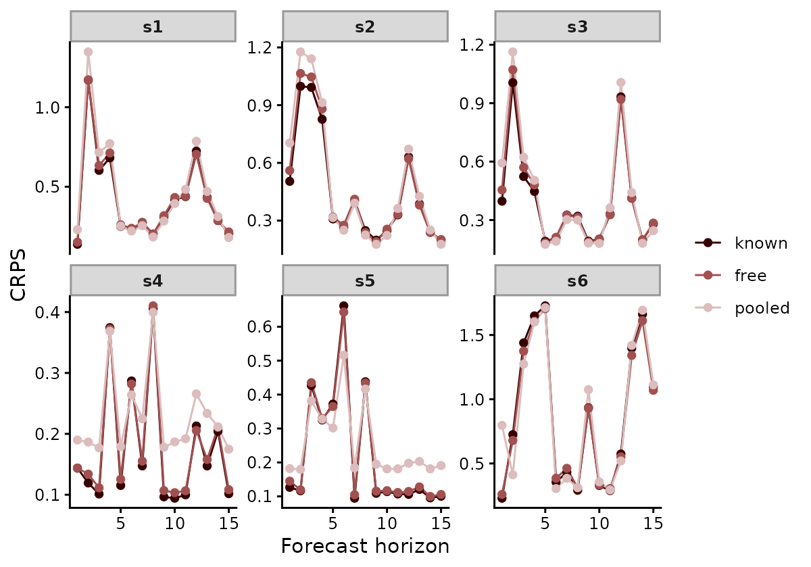

Time series collected together rarely evolve independently. Sites in
the same habitat share their weather, just as species in the same guild
share pulses of resources. Dynamic factor models capture this common
variation by assuming that a small number of latent trends drive many
observed series, with each series a weighted combination of those trends
(Zuur et al. 2003; Holmes
et al. 2012). In
mvgam, the trend_map argument of a trend constructor
controls which series load on which trends.
This vignette works through a simulated example of six series driven by three trends. We fit three models to these data: one that is given the true loadings, one that estimates the loadings from the data and one that forces every series onto a single shared trend. Along the way, we show how to interpret estimated loadings, how to check whether a model describes its training data and how to compare competing models by their forecasts of held-out data.
The model
For series and latent trend , the mean of each series on the link scale is a linear combination of the trends:
is the loading matrix, with one row per series and one column per trend. Row gives the weight of each trend in series . Every series with a non-zero weight on trend uses the same latent path . All of those series inform its posterior. With fewer trends than series, the model reduces the dimension of the problem.
Three ways to write trend_map
trend_map supplies
in one of three forms:
- A keyword.
"identity"gives each series its own trend."shared"gives every series the same trend. - A
data.framewith columnsseriesandtrend. Series given the same trend number share that trend with a loading of one. - A numeric matrix with one row per series and one column per trend.
mvgam holds each number fixed and estimates each
NA.
The matrix form covers partial knowledge. Here series s5
is free to load on any of three trends and the other five have known
loadings:
Z_partial <- rbind(
s1 = c(1, 0, 0),
s2 = c(1, 0, 0),
s3 = c(1, 0, 0),
s4 = c(0, 1, 0),
s5 = c(NA, NA, NA),
s6 = c(0, 0, 1)
)Passed as AR(trend_map = Z_partial), the fit estimates
the three NA entries. summary() lists them
under Factor Loadings. A matrix of all NA
estimates every loading, as n_lv alone does later in this
vignette.
Simulated data
To compare the three models with known loadings, we simulate six series from three AR(1) trends. Trend 1 is strongly autocorrelated () and drives series 1 to 3. Trend 2 is weakly autocorrelated () and drives series 4 and 5. Trend 3 () has the largest innovation SD and drives series 6 alone. We hold out the last 15 of the 80 time points.
set.seed(3)
n_time <- 80
n_series <- 6
n_lv <- 3
n_train <- 65
phi_true <- c(0.85, 0.15, 0.55)
sig_true <- c(0.5, 0.35, 0.8)
# Each trend starts at its stationary distribution
lv <- matrix(NA, n_time, n_lv)
lv[1, ] <- rnorm(n_lv, 0, sig_true / sqrt(1 - phi_true^2))
for (t in 2:n_time) {
lv[t, ] <- phi_true * lv[t - 1L, ] + rnorm(n_lv, 0, sig_true)
}
# Series 1-3 load on trend 1, series 4-5 on trend 2, series 6 on trend 3
Z_true <- matrix(0, nrow = n_series, ncol = n_lv)
Z_true[cbind(1:6, c(1, 1, 1, 2, 2, 3))] <- 1
# Observations add Gaussian noise with SD 0.2
y_mat <- lv %*% t(Z_true) +
matrix(rnorm(n_time * n_series, 0, 0.2), n_time, n_series)
sim_data <- data.frame(
time = rep(seq_len(n_time), n_series),
series = factor(
rep(paste0("s", seq_len(n_series)), each = n_time),
levels = paste0("s", seq_len(n_series))
),
y = as.numeric(y_mat)
)
train <- sim_data[sim_data$time <= n_train, ]
test <- sim_data[sim_data$time > n_train, ]mvgam_data() checks the training data and plots each
series, with the held-out data in black:
mvgam_data(train, family = gaussian(), trend_formula = ~ AR(),
newdata = test)
The six simulated series. Series 1 to 3 follow one trend, series 4 and 5 a second, and series 6 a third. Black lines after the dashed line are the held-out data.
Fitting known loadings
We give the first model the true grouping as a
data.frame:
tm_known <- data.frame(
series = paste0("s", seq_len(n_series)),
trend = c(1L, 1L, 1L, 2L, 2L, 3L)
)
tm_known
#> series trend
#> 1 s1 1
#> 2 s2 1
#> 3 s3 1
#> 4 s4 2
#> 5 s5 2
#> 6 s6 3The observation formula holds an intercept alone.
AR(p = 1, trend_map = tm_known) gives each of the three
trends its own AR(1) process and places the series on them. Passing
newdata = test stores the held-out data on the fit for
forecast() to use later.
fit_known <- mvgam(
formula = y ~ 1,
trend_formula = ~ AR(p = 1, trend_map = tm_known),
data = train,
newdata = test,
family = gaussian(),
chains = 4L,
iter = 2000L,
warmup = 1000L,
seed = 1L,
silent = 2L,
seed = 1L
)
summary(fit_known)
#> Family: gaussian
#> Links: mu = identity; sigma = log
#> Formula: y ~ 1
#> Data: train (Number of observations: 390)
#> Series: 6
#> Trends: AR(1)
#> Draws: 4 chains, each with iter = 2000; warmup = 1000; thin = 1;
#> total post-warmup draws = 4000
#>
#> == Observation Model ==
#> Regression Coefficients:
#> Estimate Est.Error l-95% CI u-95% CI Rhat Bulk_ESS Tail_ESS
#> Intercept 0.03 0.05 -0.06 0.12 1.00 993 1837
#>
#> Further Distributional Parameters:
#> Estimate Est.Error l-95% CI u-95% CI Rhat Bulk_ESS Tail_ESS
#> sigma 0.20 0.01 0.18 0.22 1.00 1969 2562
#>
#> == Trend Model ==
#> Trend Specific Parameters:
#> Estimate Est.Error l-95% CI u-95% CI Rhat Bulk_ESS Tail_ESS
#> sigma_trend[1] 0.54 0.05 0.45 0.66 1.00 1000 1863
#> sigma_trend[2] 0.34 0.03 0.28 0.41 1.00 1298 2082
#> sigma_trend[3] 0.81 0.08 0.68 0.97 1.00 881 1531
#> ar1_trend[1] 0.72 0.08 0.57 0.88 1.01 460 1012
#> ar1_trend[2] 0.05 0.14 -0.23 0.34 1.00 954 1901
#> ar1_trend[3] 0.46 0.12 0.23 0.68 1.01 601 1357
#>
#> Draws were sampled using sampling(NUTS). For each parameter, Bulk_ESS
#> and Tail_ESS are effective sample size measures, and Rhat is the potential
#> scale reduction factor on split chains (at convergence, Rhat = 1).
#>
#> Next steps:
#> - `pp_check(fit)`: posterior predictive checks
#> - `ordinate(fit)`: biplot of the factor scores and loadings
#> - `forecast(fit, newdata = ...)`: out-of-sample forecasts
#> - `lfo_cv(fit)`: leave-future-out model comparison
#> Use `how_to_cite(fit)` for a methods paragraph and `methods_md(fit)` for its equations.summary() reports one AR coefficient and one innovation
SD per trend. The 95% intervals of all six contain the simulated values.
The model estimates the observation SD at its true value of 0.2.
plot(type = "factors") draws the posterior path of each
trend over the training times. Its panels use the name mvgam gives any
latent process that series load on, a factor. With an AR coefficient of
0.85, trend 1 moves slowly. Trend 2 has the smallest innovations and
little memory. It stays close to zero. Trend 3 swings the most.
plot(fit_known, type = "factors")
Posterior paths of the three latent trends of the model given the true loadings.
forecast() extends each trend over the held-out times
and maps the draws back to the series through
.
Series on the same trend share one latent forecast. Each forecast decays
toward the series mean at the rate its AR coefficient sets. The decay is
clearest for series 6, whose forecast starts near its last observation
and reaches the mean within about five steps.

Forecasts from the model given the true loadings. Points are observations, and those after the dashed line are held out.
Estimating the loadings
When the grouping is unknown, n_lv asks mvgam to
estimate every loading of that many factors. The loadings take a
Student-t prior. To set the scale of the loadings, the innovation SD of
every factor is fixed at one. Each factor has its own AR coefficient,
which lets the model tell the factors apart by their dynamics and leaves
only their order and signs arbitrary. mvgam orders the factors by the
variance they explain and gives each a positive largest loading.
fit_free <- mvgam(
formula = y ~ 1,
trend_formula = ~ AR(p = 1, n_lv = n_lv),
data = train,
newdata = test,
family = gaussian(),
chains = 4L,
iter = 2000L,
warmup = 1000L,
seed = 1L,
silent = 2L,
seed = 1L
)
summary(fit_free)
#> Family: gaussian
#> Links: mu = identity; sigma = log
#> Formula: y ~ 1
#> Data: train (Number of observations: 390)
#> Series: 6
#> Trends: AR(1)
#> Draws: 4 chains, each with iter = 2000; warmup = 1000; thin = 1;
#> total post-warmup draws = 4000
#>
#> == Observation Model ==
#> Regression Coefficients:
#> Estimate Est.Error l-95% CI u-95% CI Rhat Bulk_ESS Tail_ESS
#> Intercept 0.02 0.05 -0.08 0.13 1.01 1064 1523
#>
#> Further Distributional Parameters:
#> Estimate Est.Error l-95% CI u-95% CI Rhat Bulk_ESS Tail_ESS
#> sigma 0.20 0.01 0.18 0.22 1.00 1210 2010
#>
#> == Trend Model ==
#> Trend Specific Parameters:
#> Estimate Est.Error l-95% CI u-95% CI Rhat Bulk_ESS Tail_ESS
#> ar1_trend[1] 0.70 0.09 0.52 0.87 1.01 801 1439
#> ar1_trend[2] 0.44 0.14 0.15 0.71 1.01 452 1210
#> ar1_trend[3] 0.12 0.16 -0.18 0.45 1.00 925 1231
#>
#> Factor Loadings:
#> Estimate Est.Error l-95% CI u-95% CI Rhat Bulk_ESS Tail_ESS
#> Z[s1,1] 0.55 0.07 0.41 0.68 1.01 774 922
#> Z[s2,1] 0.53 0.06 0.41 0.66 1.01 887 1112
#> Z[s3,1] 0.54 0.06 0.41 0.66 1.01 932 1385
#> Z[s4,1] -0.00 0.06 -0.12 0.12 1.00 687 1030
#> Z[s5,1] 0.02 0.06 -0.10 0.14 1.00 717 951
#> Z[s6,1] 0.17 0.23 -0.31 0.60 1.01 400 582
#> Z[s1,2] -0.07 0.17 -0.39 0.28 1.01 385 559
#> Z[s2,2] -0.02 0.16 -0.34 0.31 1.01 391 561
#> Z[s3,2] -0.01 0.16 -0.33 0.32 1.01 397 608
#> Z[s4,2] -0.00 0.11 -0.24 0.22 1.01 382 656
#> Z[s5,2] -0.04 0.11 -0.27 0.18 1.01 387 605
#> Z[s6,2] 0.77 0.12 0.51 0.99 1.01 507 1274
#> Z[s1,3] -0.04 0.11 -0.24 0.18 1.00 678 1081
#> Z[s2,3] 0.01 0.10 -0.18 0.21 1.01 712 1044
#> Z[s3,3] -0.01 0.10 -0.20 0.20 1.00 714 1130
#> Z[s4,3] 0.34 0.05 0.24 0.44 1.00 720 795
#> Z[s5,3] 0.34 0.05 0.23 0.44 1.00 585 727
#> Z[s6,3] 0.08 0.26 -0.41 0.61 1.01 359 620
#>
#> Draws were sampled using sampling(NUTS). For each parameter, Bulk_ESS
#> and Tail_ESS are effective sample size measures, and Rhat is the potential
#> scale reduction factor on split chains (at convergence, Rhat = 1).
#>
#> Next steps:
#> - `pp_check(fit)`: posterior predictive checks
#> - `shared_variation(fit)`: covariance the factors imply, unchanged by rotation
#> - `residual_cor(fit)`: implied correlations among series
#> - `ordinate(fit)`: biplot of the factor scores and loadings
#> - `forecast(fit, newdata = ...)`: out-of-sample forecasts
#> - `lfo_cv(fit)`: leave-future-out model comparison
#> Use `how_to_cite(fit)` for a methods paragraph and `methods_md(fit)` for its equations.summary() lists the loading Z[i, k] of
every series i on every factor k. Every
loading has an Rhat of at most 1.01 and a bulk effective
sample size of at least 359, enough to support the 95% intervals
interpreted below.
Eighteen rows are hard to scan. mcmc_plot() draws the
same posteriors as intervals:
mcmc_plot(fit_free, variable = "^Z\\[", regex = TRUE,
type = "intervals")
Posterior medians of the 18 loadings of the model that estimates them, with 50% (thick) and 90% (thin) intervals.
Series 1 to 3 load on factor 1 and series 6 on factor 2. Series 4 and 5 load on factor 3. Every other loading has a median near zero and an interval that contains zero. The model recovers the simulated grouping without being given it. The interval of each AR coefficient contains the simulated value of the trend its factor matches.
Fixing each factor’s innovation SD at one moves the scale of its trend into the loadings. A recovered loading should then match the innovation SD that the first model estimates for the same trend. The chunk below takes, for each trend, the loading of one of its series on the factor that matches it:
loading_free <- colMeans(as_draws_matrix(
fit_free, variable = c("Z[s1,1]", "Z[s4,3]", "Z[s6,2]")
))
sd_known <- colMeans(as_draws_matrix(
fit_known, variable = "^sigma_trend", regex = TRUE
))
round(data.frame(trend = 1:3, sd_known, loading_free,
row.names = NULL), 2)
#> trend sd_known loading_free
#> 1 1 0.54 0.55
#> 2 2 0.34 0.34
#> 3 3 0.81 0.77The two estimates differ by at most 0.04 for any trend.
plot(fit_free, type = "factors")
The three latent factors of the model that estimates its loadings. Factors 1, 2 and 3 match trends 1, 3 and 2 of the simulation.
active_factors() decomposes the covariance that the
factors give the series into its principal dimensions and reports the
share of the variance each carries. Each series here loads on a single
factor, which lines the dimensions up with the factors:
af_free <- active_factors(fit_free)
af_free
#> Active latent factors
#> Rule: variance at least 0.1 times the leading factor's
#> Fitted with: n_lv = 3
#> Posterior median active count: 3.0 (95% CI 2.0 - 3.0)
#>
#> Posterior probability that each factor is active, largest first:
#> factor prob_active median_variance median_share is_active
#> 1 1.000 2.010 0.634 TRUE
#> 2 0.998 0.873 0.277 TRUE
#> 3 0.779 0.268 0.083 TRUEThe first dimension carries 63% of the variance and the third 8%. The
third holds the trend of series 4 and 5, the trend with the smallest
innovations. Its posterior probability of being active is 0.78. Under
the Student-t prior, a factor the data do not need keeps the variance
its prior gives it. The count can then exceed the number of factors the
data need. The prior loadings_prior = "mgp" shrinks surplus
factors toward zero. With it, fit more factors than you expect and count
those that stay active.
The dependence among series is often the target of a factor model.
residual_cor() computes the correlations that the loadings
imply between each pair of series. They describe the latent predictor
alone. Observation noise does not enter them:
plot(residual_cor(fit_free))
Posterior median correlations among the six series, implied by the estimated loadings.
The correlations show the same grouping. Series 1 to 3 are strongly correlated with one another, as are series 4 and 5. Series 6 is weakly correlated with the rest.
Pooling every series
To measure what a wrong grouping costs, we fit a third model that
puts all six series on one trend with
AR(trend_map = "shared"):
fit_pooled <- mvgam(
formula = y ~ 1,
trend_formula = ~ AR(p = 1, trend_map = "shared"),
data = train,
newdata = test,
family = gaussian(),
chains = 4L,
iter = 2000L,
warmup = 1000L,
seed = 1L,
silent = 2L,
seed = 1L
)Checking the fit
Before comparing forecasts, check that each fit describes its
training data. For a fit that does, the randomised quantile residuals of
a series look like independent standard normal draws.
plot(type = "residuals") draws them for one series:
plot(fit_pooled, type = "residuals", series = "s1")
Randomised quantile residuals of series 1 under the pooled model: against the fitted values, on a normal Q-Q plot and as autocorrelation and partial autocorrelation functions.
The residuals of series 1 rise with the fitted values and are
correlated at lag 1. Because one trend cannot follow three sets of
dynamics, the residuals keep the part of series 1 that the shared trend
misses. The same plot for fit_free shows neither
pattern.
pp_check() compares the observed values of each series
with values simulated from the fit:
pp_check(fit_pooled, type = "dens_overlay_grouped", group = "series",
ndraws = 50)
Density of the observed values of each series (dark line) and of 50 sets of values simulated from the pooled model (light lines).
The simulated values of series 4 and 5 spread far wider than the observed ones. The pooled model estimates an observation SD of 0.59, against 0.20 for the model that estimates its loadings. It assigns the variation its single trend misses to observation noise. That noise widens the forecast intervals of every series:

Forecasts from the model that pools all six series onto one trend. The intervals over the training period are several times wider than those of the model given the true loadings.
Comparing forecasts
compare_scores() scores the three forecasts against the
held-out data with one rule. Each argument name becomes the name of its
model. We use the continuous ranked probability score (CRPS) and the log
score, for which lower values are better. Printing the result ranks the
models by their score at each horizon, summed over the six series and
averaged over the 15 horizons:
fc_free <- forecast(fit_free)
crps <- compare_scores(known = fc_known, free = fc_free,
pooled = fc_pooled, score = "crps")
crps
#> CRPS of 3 models, lower is better
#>
#> model mean_score difference
#> known 2.5 0.000
#> free 2.6 0.029
#> pooled 2.8 0.200
#>
#> 'difference' is the gap to the best. plot() shows each horizon.
logs <- compare_scores(known = fc_known, free = fc_free,
pooled = fc_pooled, score = "logs")
logs
#> Log score of 3 models, lower is better
#>
#> model mean_score difference
#> known 6.2 0.000
#> free 6.3 0.048
#> pooled 7.4 1.200
#>
#> 'difference' is the gap to the best. plot() shows each horizon.The pooled model ranks last on both scores. Its mean log score of 7.41 compares with 6.25 for the model given the true loadings. The model that estimates its loadings scores 2.58 on CRPS and 6.30 on the log score, close to the 2.55 and 6.25 of the model given the true loadings. In this simulation, estimating the loadings costs little forecast accuracy. A wrong grouping costs much more.
plot() draws the CRPS of each series at each
horizon:
plot(crps)
CRPS of each series at each forecast horizon for the three models. Lower values are better.
The pooled model scores worst on series 4 and 5 at most horizons. Its forecasts of those series carry the observation noise it estimates from all six series.
A held-out forecast score is a practical check on a proposed
grouping. Where two candidate trend_map structures are
plausible, fit both and compare their scores.
Where to next
-
?trend_constructorsdescribestrend_map.?mvgamdescribesloadings_prior, which sets a structured prior on estimated loadings (Heaps and Jermyn 2024). -
?compare_scoresand?scorelist the available scoring rules. -
?residual_corand?shared_variationgive the correlations and covariances among series, with their intervals. -
?ordinatedraws the series loadings and the factor scores as a biplot. -
how_to_cite()writes a methods paragraph for a fitted model with the references for its factor structure.methods_md()writes out its equations. - The forecast
evaluation article covers
lfo_cv()andensemble()for comparing and combining models. - The JSDM
article applies the same factor structure to community data with
jsdgam(). - The VAR article covers models where each series keeps its own trend and the trends affect one another.
- The overview vignette introduces the other trend models and their arguments.
References
Heaps, S. E. and Jermyn, I. H. (2024). Structured prior distributions for the covariance matrix in latent factor models. Statistics and Computing 34, 143. doi:10.1007/s11222-024-10454-0
Holmes, E. E., Ward, E. J. and Wills, K. (2012). MARSS: Multivariate Autoregressive State-space Models for Analyzing Time-series Data. The R Journal 4(1), 11-19. doi:10.32614/RJ-2012-002
Zuur, A. F., Fryer, R. J., Jolliffe, I. T., Dekker, R. and Beukema, J. J. (2003). Estimating common trends in multivariate time series using dynamic factor analysis. Environmetrics 14(7), 665-685. doi:10.1002/env.611